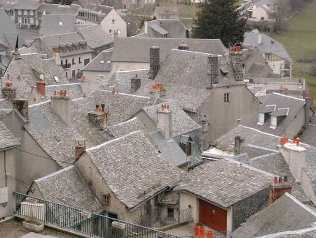
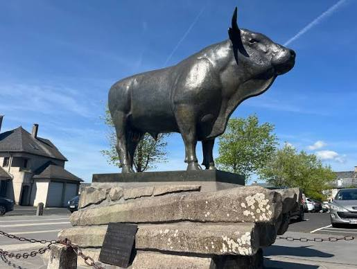

Laguiole


⟹ Capitale du Couteau & du Fromage de l'Aubrac ⟸
Perché à plus de mille mètres d'altitude, au cœur des hauts plateaux de l'Aubrac — que les anciens nommaient Alto Brac, la terre haute et humide — Laguiole s'est construit dans la rudesse et la fidélité à la montagne. Village de pierre et de vent, il vit depuis des siècles au rythme de la transhumance : chaque printemps, les troupeaux de vaches de race Aubrac montent vers les estives, ponctuées de burons, ces bâtisses de pierre coiffées de lauzes où l'on fabriquait autrefois le fromage dans la solitude des hauteurs.

C'est en 1829 qu'apparaît dans le village un couteau pliant destiné aux paysans, inspiré à la fois du navaja espagnol, rapporté par les saisonniers partis travailler en Catalogne, et du couteau local, le capouchadou. Ce couteau de poche, à manche légèrement recourbé et lame allongée, deviendra au fil du XIXe et du XXe siècle l'un des fleurons de la coutellerie française, aux côtés de l'Opinel, du Thiers ou du Nontron. Sa réputation mondiale lui vaudra d'innombrables imitations, mais c'est bien à Laguiole, sur ce plateau volcanique et granitique, qu'est née la légende.
Autour du couteau s'est développée toute une économie et une identité villageoise, portée aussi par l'exode d'Auvergnats montés à Paris, qui ont fondé nombre de célèbres cafés et brasseries de la capitale — certains, comme le Lipp ou le Café de Flore, en portent encore l'empreinte — tout en restant profondément attachés à leur terre natale, à laquelle ils revenaient pour les fêtes et les amicales de pays. Sur la place du Taureau, la statue de la vache Aubrac, la « belle aux yeux cernés de noir », rappelle depuis plusieurs décennies la place centrale de l'élevage dans l'identité du village.
En 1961, le fromage de Laguiole obtient à son tour une Appellation d'Origine Contrôlée, perpétuant une tradition fromagère ancestrale portée aujourd'hui par la Coopérative Jeune Montagne. Entre élevage, fromage et coutellerie, Laguiole a su préserver ce qui fait son âme : la rigueur du travail, le respect du geste, et un lien indéfectible à la terre de l'Aubrac.

Parcours numérique en famille : un jeu de piste permet aux enfants de découvrir les secrets de Laguiole de façon ludique, entre coutellerie et légendes locales.
Fête de la transhumance : chaque printemps, la montée des troupeaux vers les estives de l'Aubrac anime le village de défilés et de réjouissances populaires.
Route de l'aligot : à la découverte des burons et des fermes-auberges alentour, pour comprendre la fabrication de la tome fraîche à l'origine du célèbre plat.
Laguiole s'inscrit au cœur du plateau de l'Aubrac, vaste étendue de pâturages volcaniques entre Aveyron, Cantal et Lozère.
Village de l'Aubrac hameau emblématique du plateau, avec sa dômerie du XIIe siècle fondée pour accueillir les pèlerins de Compostelle.
Gorges de la Truyère pour une randonnée ou une descente en canoë dans un paysage sauvage de barrages et de méandres.
Sainte-Eulalie-d'Olt et sa sublime église romane du XIe siècle, l'un des plus beaux villages de la vallée du Lot.
Espalion ses maisons sur le Lot et son Vieux Pont, à une trentaine de minutes.